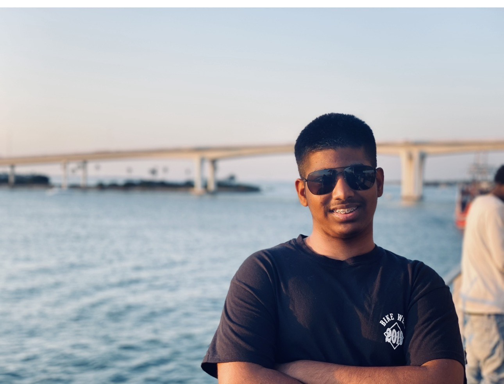

Home

My name is Mirza Faruq! I am currently a full time Computer Sceience student at Boston University. I am from Big Apple and a lover of side quests and adventures. I aim to complete my Undergraduate and work as in Cybersecurity! Some things I like to do in my free time is go hiking or to the beach. Talking about Hiking, i would love to visit Kazakstan where they have wild horses by amazing mountains